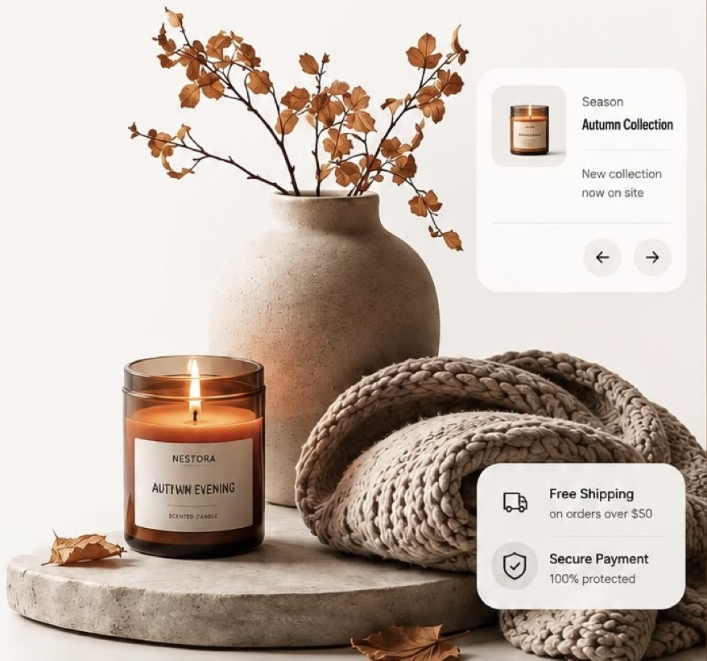
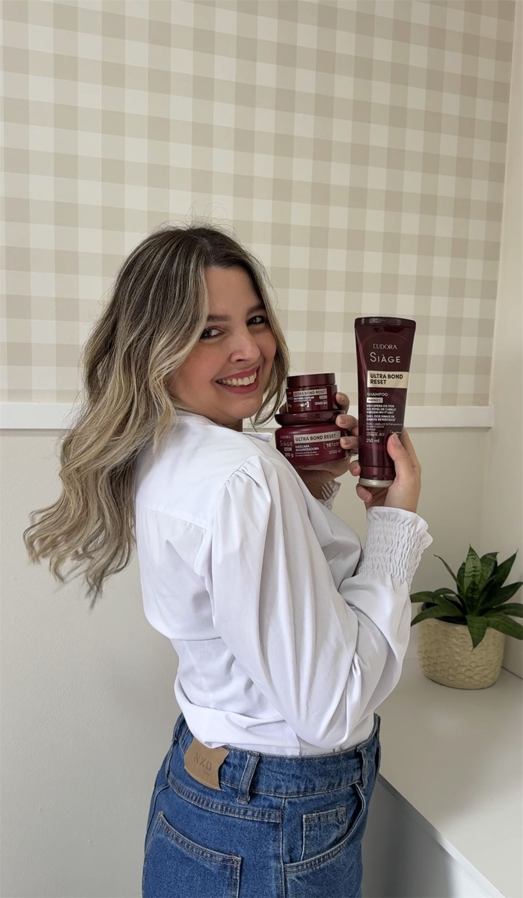
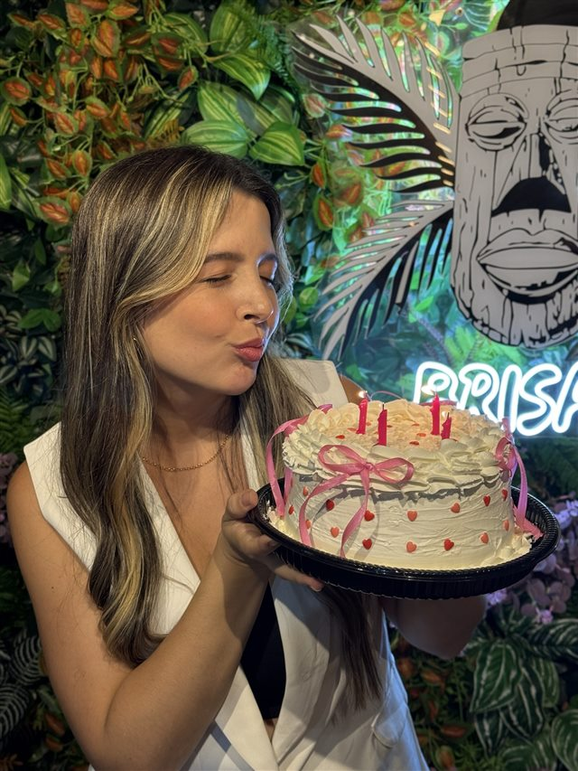
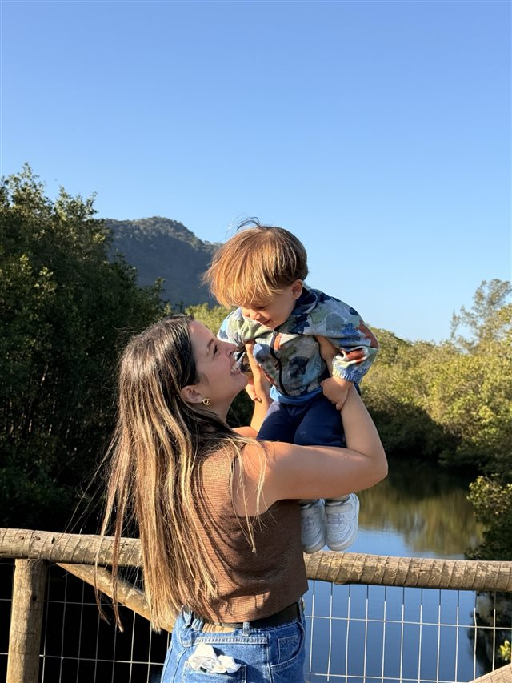
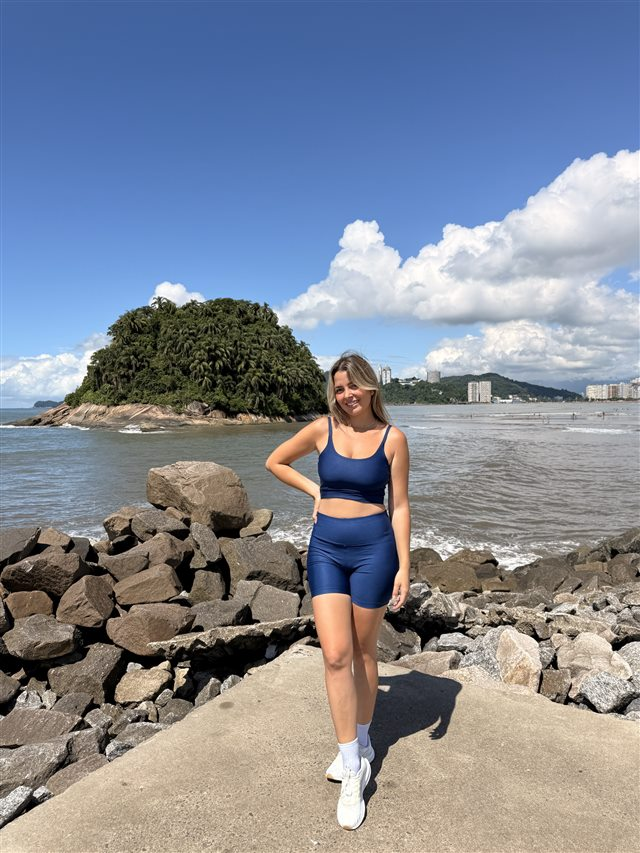
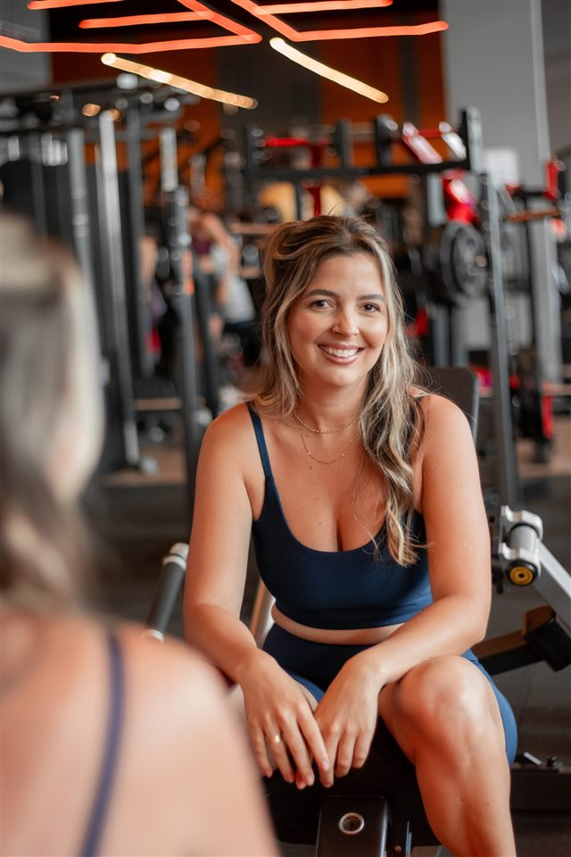

Diário da sua creator
Conteúdo quefaz sua marcaser escolhida.
Transformo o dia a dia em vídeos autênticos, com humor leve e cara de conversa de amiga.

Marcas que confiam no meu trabalho

Prazer, eu sou a Yasmin.

32 anos
Mãe do Bernardo
Moro no litoral de SP
Amo me cuidar e motivar mulheres
Crio conteúdo para mulheres sobre autocuidado, de um jeito natural e com cara de conversa de amiga, mostrando que, mesmo na rotina corrida de cuidar de tudo e de todos, a gente não pode se esquecer de nós mesmas.
Cada vídeo é dinâmico, alinhado com a sua campanha e pensado para levar a mensagem certa e despertar desejo. Com um olhar analítico, transformo o seu produto em desejo de consumo: conteúdo autêntico que cria conexão real, gera autoridade e traz resultado.
Melhores vídeos.
Os que mais representam o meu estilo de criação.
Trabalhos por nicho
Escolha um nicho e dê play nos vídeos que eu já produzi para cada marca.
Como eu te ajudo
Toque num bloco para ver os detalhes. Cada um abre direto no meu WhatsApp.
Fotos UGC
Fotos com luz natural e cara de vida real, prontas para site, catálogo e redes sociais.
Vamos criar juntos?
Me conta sobre a sua marca e o que você precisa.
Mensagem enviada!
Eu respondo em até um dia útil.